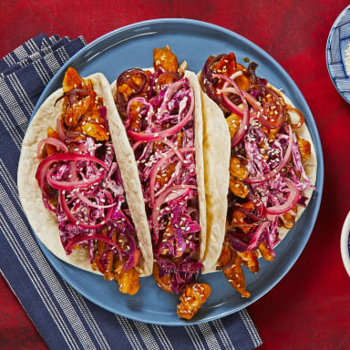

Teriyaki Chicken Tacos

Description
REMIX! Here at HelloFresh, we’re all about a mash-up. This week, our chefs combined two dishes that were
totally meant to be. Sweet-and-savory teriyaki chicken is piled into steamy tortillas along with pickled red
onion and a tangy, crunchy slaw. For a finishing touch, the tacos are sprinkled with sesame seeds. One bite
will make your taste buds sing.
Ingredients
- 1 Red Onion
- 5 Tsp Red Wine Vinegar
- 1 Tsp Sriracha
- 2 Tbsp Sour Cream
- 4 oz Shredded Red Cabbage
- 10 oz Chicken Breast Strips
- 8 Tbsp Teriyaki Sauce
- 1 Tbsp Sesame Seeds
- 6 Flour Tortillas
Cooking Instructions
-
Wash and dry produce. Halve, peel, and very thinly slice onion. In a small bowl, combine half the
vinegar (you’ll use the rest later), ½ tsp sugar (1 tsp for 4 servings), and a pinch of salt and pepper.
Add ¼ of the sliced onion; toss to coat. Set aside, stirring occasionally, until ready to serve.
-
In a medium bowl, combine sour cream, remaining vinegar, ½ tsp sugar (1 tsp for 4 servings), and
sriracha (start with half and add more if you like things spicy). Stir in half the cabbage. Season
with salt and pepper. Set aside, stirring occasionally, until ready to serve.
-
Heat a large drizzle of oil in a large pan over medium-high heat. Add remaining onion and cabbage
and season with salt and pepper. Cook, stirring, until slightly softened, 2-3 minutes.
-
Meanwhile, pat chicken dry with paper towels. Add to pan with veggies along with another drizzle
of oil, salt, and pepper. Cook, stirring often, until chicken is browned and cooked through,
4-6 minutes.
-
Add teriyaki sauce to pan; bring to a boil. Reduce to a low simmer and cook until sauce is slightly
thickened and coats chicken and veggies, 4-6 minutes. Stir in half the sesame seeds. Season with
salt and pepper.
-
Wrap tortillas in damp paper towels and microwave until warm and pliable, 30 seconds. Divide
chicken and veggie mixture (using a slotted spoon if needed) between tortillas. Top with cabbage
slaw and pickled onion. Sprinkle with remaining sesame seeds and serve.